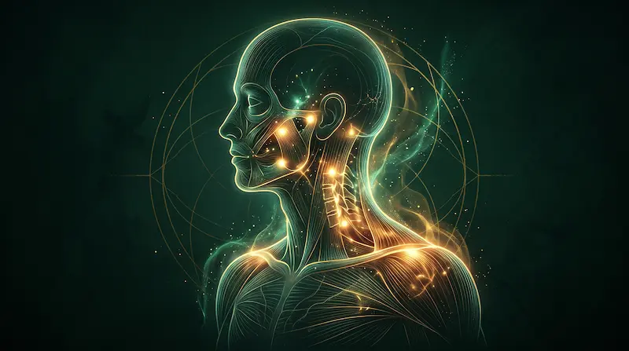
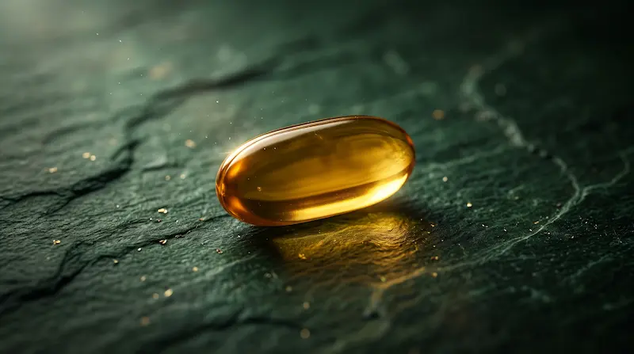

Физиология питания
Почему клонит в сон после обеда и что с этим делать
Разбираем частые причины резкого спада сил после еды, простые меры саморегуляции и симптомы, при которых нужен врач.
Михаил Воевода
Читать статью →

Психосоматика
Ночные воры энергии: 3 скрытых мышечных зажима
Почему вы спите 8 часов, но просыпаетесь разбитым? Ищем следы скрытого стресса в теле.
Михаил Воевода
Читать статью →

Биохакинг и здоровье
Пьете витамин D3, а эффекта ноль? Главные ошибки приема
Почему вы пьете высокие дозировки витамина D, но по анализам дефицит сохраняется? Ищем скрытых «пожирателей» ресурса.
Андрей Воевода
Читать статью →